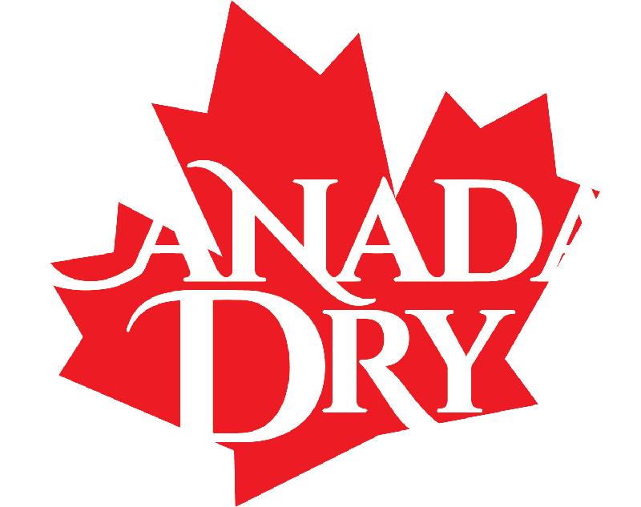

Yo, it's been another couple of months since I've posted on this "side-page", so let's talk about something.
I've been working on a brand redesign for my Graphic Design class; Evan and I choose to redesign the Canada Dry brand. I've never really had Canada Dry before, but I tried it out about a week or two ago, and it's pretty good. I'm more of a Sprite or 7-Up guy, but Canada Dry -- ain't that bad.
I was also able to get my multi-streaming Twitch channel, known as NOCLUE x86, working again. I made a RTMP server as a Windows 10 VM on my main server, Sommus, and it's running pretty well. I've done a total of two streams with two of my friends (the VOD for the first stream wasn't saved sadly, but there's some clips from it) as of writing.
I'm hoping to release an older-style sub-website this Friday, I'll make another short Spaces post when that happens. I'm also hoping to work on finding people that might have the Meteos Online client; going to be sending out an email to an person that made a screenshot program for the game.
But that's all for now, stay safe out there.